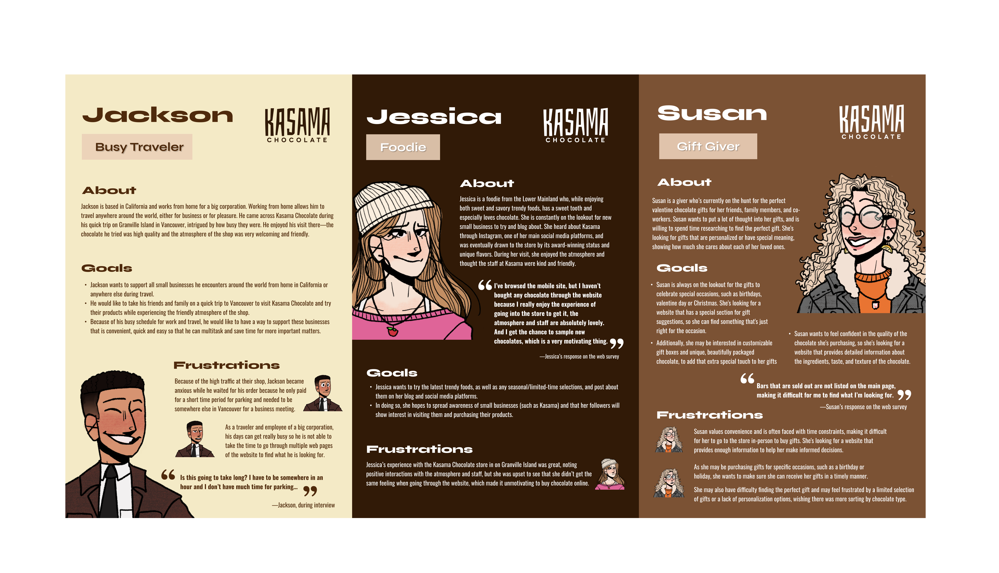

Kasama Chocolate
Company Website Designer
Classification: Academic
Contributors: Xiyue, Lisa, Winnie, Kirsten
My Roles: Visual Designer; Content Writer;
Tools: Figma, Miro,
Date: Jan - Apr 2023
×

Objective
Our design group aims demonstrated an efficient design argument/method for a specific concept which could fit and benefit to the partner organization Kasama Chocolate as a small batch bean-to-bar chocolate company located on Granville Island.
Research and Data
During the research phase, we conducted Zoom meetings with the co-founder of Kasama and conducted in-store interviews and observations.
I implemented an online survey using Google Forum and analyzed customer reviews and the data and analytics provided by the owner. Through these efforts, I gained insights into the customers' perceptions and their level of engagement with the in-store and website purchasing.
Thematic Analysis & Initial Design Focus
I played a significant role in conducting a thematic analysis of the collected data. By analyzing the feedback and information gathered, we create ethnographic poster and I was responsible for the visual design.
We identified five themes and our focus contained two pathway on improving the overall user experience of the website or in-store. We communicated with the store owner in a weekly manner to ask their opinions based on their needs and our skills, then decided we wanna develop methods for the website.
Furthermore, I advocated for aligning the online experience with the friendly atmosphere of the in-store experience by incorporating company stories and behind-the-scenes content.
Persona & User Journey Map
In three personas we created, I was responsible for creating a detailed personas as a “gift giver” that primely defined one type of target audience of a chocolate store.
I found a free template in Picrew — a make-and-play image maker — to visualize the profiles of personas; which ensured we bring out most customized figures in a short amount of time. These personas helped us gain a deeper understanding of our users' needs and motivations.
Furthermore, I mapped out various user journey scenarios, identifying pain points and opportunities for improvement throughout the website experience.

Three Concept Posters and Issues
We developed three concept posters for different design interventions based on our design focus, however, we did not have a flushed out design problem in general, since we designed based on the previous scenarios and personas we came up with. After evaluation with teaching team, we realized that our concepts are too general, less persuasive, and lack of intentions.
Reframed Design Focus
To address this, I leveraged tools such as media queries and flexible grid layouts, guaranteeing that the website maintained its intended look and functionality across diverse devices.
By prioritizing responsive design and conducting rigorous testing, our team successfully overcame this challenge, ensuring a seamless user experience across all devices.

Two Participatory Workshops
My contribution to this project resulted in the creation of a user-friendly, accessible, and responsive company website.
Through effective collaboration using GitKraken, I distributed and merged the work. I also played a key role in consolidating the style guides, prioritizing responsive design, maintaining clean and readable code, and conducting user testing.
This experience allowed me to further develop my skills in collaboration, website building, and user experience optimization.

Objective
Our design group aims demonstrated an efficient design argument/method for a specific concept which could fit and benefit to the partner organization Kasama Chocolate as a small batch bean-to-bar chocolate company located on Granville Island.
Research and Data
During the research phase, we conducted Zoom meetings with the co-founder of Kasama and conducted in-store interviews and observations.
I implemented an online survey using Google Forum and analyzed customer reviews and the data and analytics provided by the owner. Through these efforts, I gained insights into the customers' perceptions and their level of engagement with the in-store and website purchasing.
Thematic Analysis & Initial Design Focus
I played a significant role in conducting a thematic analysis of the collected data. By analyzing the feedback and information gathered, we create ethnographic poster and I was responsible for the visual design.
We identified five themes and our focus contained two pathway on improving the overall user experience of the website or in-store. We communicated with the store owner in a weekly manner to ask their opinions based on their needs and our skills, then decided we wanna develop methods for the website.
Furthermore, I advocated for aligning the online experience with the friendly atmosphere of the in-store experience by incorporating company stories and behind-the-scenes content.
Persona & User Journey Map
In three personas we created, I was responsible for creating a detailed personas as a “gift giver” that primely defined one type of target audience of a chocolate store.
I found a free template in Picrew — a make-and-play image maker — to visualize the profiles of personas; which ensured we bring out most customized figures in a short amount of time. These personas helped us gain a deeper understanding of our users' needs and motivations.
Furthermore, I mapped out various user journey scenarios, identifying pain points and opportunities for improvement throughout the website experience.
Three Concept Posters and Issues
We developed three concept posters for different design interventions based on our design focus, however, we did not have a flushed out design problem in general, since we designed based on the previous scenarios and personas we came up with. After evaluation with teaching team, we realized that our concepts are too general, less persuasive, and lack of intentions.
Reframed Design Focus
To address this, I leveraged tools such as media queries and flexible grid layouts, guaranteeing that the website maintained its intended look and functionality across diverse devices.
By prioritizing responsive design and conducting rigorous testing, our team successfully overcame this challenge, ensuring a seamless user experience across all devices.
Two Participatory Workshops
My contribution to this project resulted in the creation of a user-friendly, accessible, and responsive company website.
Through effective collaboration using GitKraken, I distributed and merged the work. I also played a key role in consolidating the style guides, prioritizing responsive design, maintaining clean and readable code, and conducting user testing.
This experience allowed me to further develop my skills in collaboration, website building, and user experience optimization.